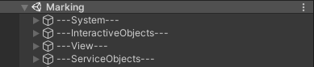

Первоначальная настройка новой сцены
Сердце тренажера должно поддерживаться в чистоте :)
После создания новой сцены необходимо удалить с нее все имеющиеся объекты!!!
UPD. Шаблон сцены можно взять по пути "Assets/VRCommonComponents/Scenes/!SceneTemplate" Для его использования необходимо скопировать шаблон сцены, переместить в папку тренажера и переименовать в название тренажера транслитом
Иерархия
В корне сцены должны находиться 4 пустых объекта и ничего больше:
---System---
---InteractiveObjects---
---View---
---ServiceObjects---
Позиция и поворот данных объектов должны быть обнулены. Скаляция по всем 3-м осям равна 1
---System---
Внутрь этого объекта помещаются все объекты, являющиеся ядром тренажера, а именно:
- VROrigin
- Всевозможные менеджеры (все менеджеры должны быть сгруппированы под пустым объектом Managers)
- TPMain
---InteractiveObjects---
Внутрь этого объекта помещаются, с которыми, явно или неявно, может взаимодействовать пользователь в процессе прохождения тренажера (Пример, газоанализатор, знак, цепь, рабочие в тренажере "Замкнутое пространство"
---View---
Внутрь этого объекта помещаются неинтерактивные объекты окружения (Пример, стол, бочка, здание и прочее подобное)
---ServiceObjects---
Внутрь этого объекта помещаются вспомогательные модули тренажера, освещение, звук (Пример, AudioReverbZone, коллайдеры пола, модуль CloseToWall)
Пример иерархии:

Порядок создания объектов на сцене
- Создать пустой объект в корне сцены
- Переименовать его в ---System---
- Обнулить положение и поворот созданного объекта.
- Проверить скаляцию созданного объекта по всем 3-м осям. Она должны быть равна 1
- Перетащить префаб VROrigin, лежащий по пути "Assets/VRCommonComponents/Prefabs/VROriginFinal/VROrigin" на созданный объект. (Положение префаба настраивается при создании окружения сцены)
- Создать пустой объект дочерним от ---System---
- Переименовать его в Managers
- Создать пустой объект дочерним от Managers
- Переименовать его в EventManager
- Повесить на него скрипт EventManager. (ВАЖНО! Так как в проекте присутуствуют 2 скрипта с названием EventManager, необходимо убедиться, что на объект EventManager автоматически повесился скрипт DictionaryForEventManager В противном случае необходимо использовать другой скрипт)
- Создать пустой объект дочерним от Managers
- Переименовать его в AudioManager
- Повесить на него скрипт AudioManager. (ВАЖНО! Так как в проекте присутуствуют 2 скрипта с названием AudioManager, необходимо убедиться, что в инспекторе видно только поле TargetAudioSource. В противном случае необходимо использовать другой скрипт)
- В поле AudioSource перетащить камеру, лежащую по пути "---System---/VROrigin/Height/ViveRig/Camera" в иерархии на сцене
- Создать пустой объект дочерним от Managers
- Переименовать его в TPMain (Это объект, использующийся как родитель для всех телепортов, которые будут существовать на сцене)
- Создать пустой объект дочерним от Managers
- Переименовать его в LessonManager
- Повесить на него скрипт LessonManager_V2.
- В инспекторе в поле TeleportMainObject перетащить созданный ранее объект TPMain
- Создать пустой объект дочерним от LessonManager
- Переименовать его в Scenaries
- Создать пустой объект дочерним от Scenaries
- Переименовать его в Prestage. ВАЖНО! Данное название не должно изменяться!
- Повесить на него скрипт LessonManagerScenario_V2
- Создать пустой объект дочерним от Scenaries
- Переименовать его в Learning. ВАЖНО! Данное название не должно изменяться!
- Повесить на него скрипт LessonManagerScenario_V2
- Создать пустой объект дочерним от Scenaries
- Переименовать его в Training. ВАЖНО! Данное название не должно изменяться!
- Повесить на него скрипт LessonManagerScenario_V2
- Создать пустой объект дочерним от Scenaries
- Переименовать его в Exam. ВАЖНО! Данное название не должно изменяться!
- Повесить на него скрипт LessonManagerScenario_V2
- Создать пустой объект в корне сцены
- Переименовать его в ---InteractiveObjects---
- Обнулить положение и поворот созданного объекта.
- Проверить скаляцию созданного объекта по всем 3-м осям. Она должны быть равна 1
- Создать пустой объект в корне сцены
- Переименовать его в ---View---
- Обнулить положение и поворот созданного объекта.
- Проверить скаляцию созданного объекта по всем 3-м осям. Она должны быть равна 1
- Создать пустой объект в корне сцены
- Переименовать его в ---ServiceObjects---
- Обнулить положение и поворот созданного объекта.
- Проверить скаляцию созданного объекта по всем 3-м осям. Она должны быть равна 1
- Перетащить префаб InitPosition, лежащий по пути "Assets/VRCommonComponents/InternalAssets/InitPosition/InitPosition" на созданный объект. (Положение префаба настраивается при создании окружения сцены и должно быть на уровне пола в точке VROrigin)
- В инспекторе в поле DarkScreen перетащить объект IntoDarkness, лежащий по пути "---System---/VROrigin/Height/ViveRig/Camera/IntoDarkness" в иерархии на сцене